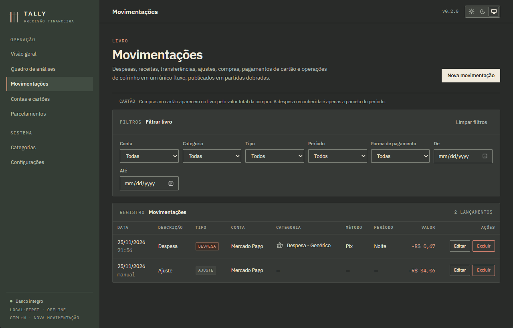
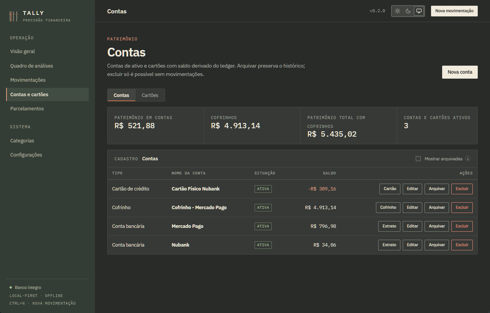
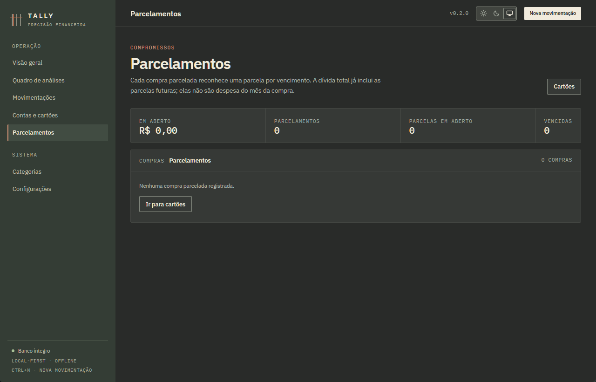

Estudo 01 / Produto digital
Tally
Aplicativo desktop de controle financeiro pessoal, local-first, desenhado para leitura precisa do patrimônio, das movimentações e dos compromissos.
Este estudo documenta decisões de produto e interface a partir do histórico do projeto. Não inclui pesquisa com usuários, métricas de uso ou resultados financeiros. As capturas serão substituídas por versões com dados fictícios e valores ocultados. A interface do Tally está em português brasileiro; legendas e textos alternativos são traduzidos.
Contexto e problema
Controle sério sem depender da nuvem.
Tally é um aplicativo desktop de finanças pessoais para Windows. Os dados ficam em um banco SQLite local; não há login, sincronização em nuvem, assinatura ou telemetria. A única requisição de rede é a taxa pública do CDI usada nos rendimentos dos cofrinhos.
O projeto parte de uma premissa de produto: controle financeiro pessoal exige o mesmo rigor de um banco para cartões e parcelamentos, com uma interface densa e legível. As regras financeiras ficam no núcleo em Rust; a interface apresenta o estado calculado, não inventa saldos.
A consequência visual é uma aplicação densa, mas legível: números com peso, tabelas alinhadas, estados explícitos e pouca decoração sem função.
Contexto reconstruído a partir do README e do ROADMAP do projeto. Sem pesquisa com usuários ou métricas de uso.
“Um instrumento de precisão financeira, local-first e offline.”
Direção do produtoPrincípios e arquitetura da informação
Uma ordem que separa operação de sistema.
A navegação da v0.2.0 organiza o produto em dois grupos. A ordem é intencional: primeiro o que o usuário opera no dia a dia; depois o que configura o sistema.
- Operação
- Visão geral · Quadro de Análises · Movimentações · Contas e cartões · Parcelamentos
- Sistema
- Categorias · Configurações
A Visão geral responde “onde estou agora”: patrimônio, contas, resumo do mês e últimos lançamentos. O Quadro de Análises responde “como isso evolui”: gráficos, comparativos e filtros temporais, com seletor de mês próprio.
Movimentações é o livro; Contas e cartões reúne ativos e passivos; Parcelamentos é a fonte completa de compromissos e parcelas. A separação evita que a Visão geral acumule filtros e gráficos que pertencem à análise.
Identidade e linguagem visual
Uma gramática visual para números e obrigações.

Papel quente, tinta, oliva e terracota; IBM Plex Sans e IBM Plex Mono; temas claro, escuro e sistema.
Identidade do produto, não do siteA identidade do Tally foi construída para um software financeiro sério: tipografia forte, números protagonistas, tabelas densas, alinhamento rigoroso e divisórias sutis. A base registrada é IBM Plex Sans e IBM Plex Mono, papel quente, tinta, oliva e terracota, com temas claro, escuro e sistema.
A família terracota/oxide aparece na marca, em ações e também em estados semânticos da interface, como alertas, negativos e destaques. Não é uma cor exclusiva de marca ou de ação.
O site do portfólio mantém sua própria identidade editorial. A identidade do Tally aparece nas mídias e no símbolo, sem recolocar a paleta ou a tipografia do produto no chrome do site.
- Símbolo
- tally.png; versão para fundo claro em tally-symbol-mark.png
- Tipografia
- IBM Plex Sans / IBM Plex Mono
- Paleta
- Papel quente, tinta, oliva e terracota
- Temas
- Claro, escuro e sistema
A interface
Números protagonistas, densidade controlada.
A hierarquia da interface coloca os números que importam no topo e mantém a leitura densa sem esconder contexto. Valores monetários usam numerais tabulares e alinhamento à direita; tabelas usam divisórias sutis; estados de carregamento, erro e vazio são explícitos.
A cor tem função semântica: receita e despesa têm cores próprias; transferências permanecem neutras; a terracota aparece em marca, ações e estados de atenção. O resultado é uma interface de produto financeiro, não um dashboard genérico.




As capturas são do aplicativo e serão substituídas por versões com dados fictícios e valores ocultados. Os dois GIFs de interação continuam como placeholders.
Capturas em tema escuroDecisões de produto
Decisões que sustentam a interface.
Um único fluxo de entrada. Despesa, receita, transferência, compra no cartão, pagamento e ajuste partem do mesmo formulário adaptativo. O tipo muda os campos e as validações, não a lógica de navegação.
Compra parcelada não é despesa mensal. O total da compra aumenta a dívida do cartão; a despesa é reconhecida parcela a parcela. A conta interna “Despesa a reconhecer” mantém o patrimônio correto e evita dupla contagem.
Visão geral e Quadro de Análises têm papéis distintos. A Visão geral mostra a posição atual, sem seletor global de mês. O Quadro concentra gráficos, comparativos e filtros temporais.
Confirmação, backup e reversibilidade. Ações destrutivas pedem confirmação com consequência explícita; o app cria backups antes de migrações e permite backup e restauração local. O frontend não assume sucesso antes da resposta do núcleo.
Evolução do produto
Evolução contínua, registrada no repositório.
Este estudo apresenta o Tally em seu estado atual. As decisões, melhorias e mudanças realizadas ao longo do projeto podem ser acompanhadas pelo histórico do repositório, commit a commit.
O histórico de commits mostra a evolução do código e da interface. As releases reúnem as versões publicadas e suas respectivas notas.
Dimensão técnica
A interface é a ponta de um sistema consistente.
O Tally usa Rust para regras financeiras e persistência, Tauri 2 como shell desktop, Svelte 5 e TypeScript na interface e SQLite local. Uma mutação é uma transação; relatórios leem apenas lançamentos publicados. A interface não calcula saldos por conta própria.
A distribuição é um instalador NSIS para Windows 10/11, com WebView2 offline. O usuário final não precisa instalar Node, Rust ou SQLite. Os dados permanecem no computador e podem ser preservados por backup local.
- Stack
- Rust · Tauri 2 · Svelte 5 · TypeScript · SQLite
- Arquitetura
- Tally.exe → Tauri → Svelte/TypeScript → comandos → Rust → SQLite
- Dados
- SQLite local em %LOCALAPPDATA%\Tally\
- Distribuição
- Instalador NSIS / Windows 10/11
- Privacidade
- Sem login, nuvem, sincronização ou telemetria. A única rede é a consulta pública do CDI.
Ficha técnica
Informações do projeto.
- Projeto
- Tally — controle financeiro pessoal
- Tipo
- Aplicativo desktop / produto digital
- Ano / status
- 2026 / v0.2.0 publicada
- Papel
- Design de produto, UI e desenvolvimento
- Escopo
- Produto, arquitetura da informação, interface e implementação
- Interface
- Svelte 5 + TypeScript; temas claro, escuro e sistema
- Distribuição
- Instalador Windows (NSIS)
- Dados
- SQLite local; sem login ou nuvem
- Idioma do produto
- Português brasileiro